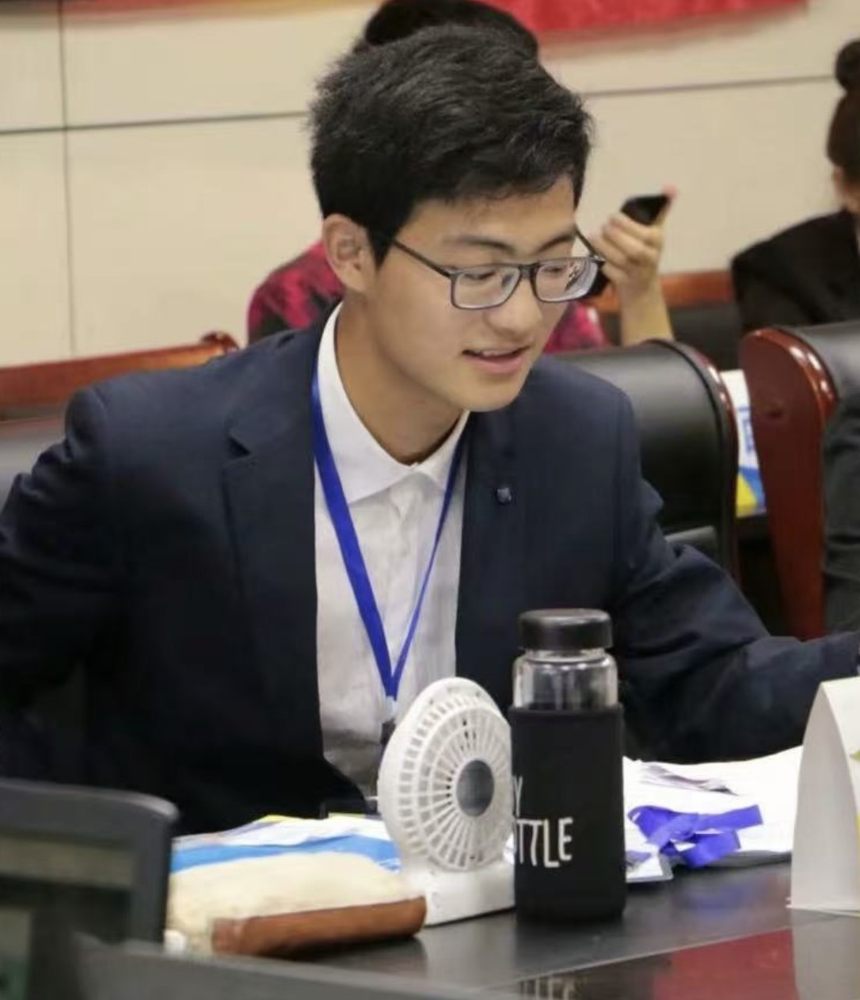

<!DOCTYPE html>
<html>
<head>
  <meta charset="UTF-8">
  <!-- 引入 MathJax v3 -->
  <script>
    window.MathJax = {
      tex: { inlineMath: [['$', '$'], ['\\(', '\\)']] }
    };
  </script>
  <script async src="https://cdn.jsdelivr.net/npm/mathjax@3/es5/tex-mml-chtml.js"></script>
</head>
</html>

<html>

<head>
    <meta http-equiv="Content-Type" content="text/html;charset=utf-8" />
    <link rel="stylesheet" type="text/css" href="style.css" />
    <title>Yang Li</title>
</head>


  
<body>
<table summary="Table for page layout." id="tlayout">
<tr valign="top">
<h1 style="padding-left: 0.5em">Yang Li</h1><hr>
<td id="layout-menu">
    <div class="menu-item"><a href="#home">Home</a></div>
    <div class="menu-item"><a href="#int">Research Interests</a></div>
     <div class="menu-item"><a href="#awards">Awards</a></div>
    <div class="menu-item"><a href="#preprints">Preprints</a></div>
    <div class="menu-item"><a href="#publication">Publications</a></div>
    <div class="menu-item"><a href="#speakers">Speakers</a></div>
    <div class="menu-item"><a href="#ser">Services</a></div>


</td>
<td id="layout-content">
    <table class="imgtable"><tr valign="top">
        <td></td>
        <td align="left">
            <p><span style="font-size: 125%"><b>Yang Li (李洋)</b></span></p>
            <p
                style="line-height: 1.5em;"> Research Fellow (Postdoc)
            </p>
            <p style="line-height: 1.5em;">
                <a href="https://www.ntu.edu.sg/spms">School of Physical and Mathematical Sciences (SPMS)</a><br>
               <!--  <a href="https://www.sydney.edu.au/engineering/">Faculty of Engineering</a><br>-->
                <a href="https://www.ntu.edu.sg">Nanyang Technological University</a><br>
            </p>

            <!-- <p>
                Address: <a href="https://www.google.com/maps/place/Faculty+of+Engineering+(J12),+University+of+Sydney+(USYD)/@-33.888212,151.194142,16z/data=!3m1!4b1!4m6!3m5!1s0x6b12b1d68b43debd:0x45cb8629ea7495e4!8m2!3d-33.888212!4d151.194142!16s%2Fg%2F1wzt2jft?entry=ttu">J12/ 1 Cleveland St, Darlington, NSW 2008, Australia</a><br>
            </p>-->
            <p>
                E-mail: li-y [at] ntu.edu.sg/yanglimath [at] 163.com
            </p>
            <p style="line-height: 1.5em;">
                <a href="https://scholar.google.com/citations?user=iKsgEvIAAAAJ&hl=en">[Google Scholar]</a> 
                <a href="https://dblp.org/pid/37/4190-194.html">[DBLP]</a> 
            </p>
        </td>
    </tr></table>

    
    <div>
        <h2><hr><a name="home"></a>About Me</h2>
        <p>
          I earned my Ph.D. through a combined Master's and Doctoral program at the School of Mathematics, 
          Hefei University of Technology (HFUT, China) in November 2024, under the supervision of 
          Prof. Shixin Zhu <a href="https://maths.hfut.edu.cn/info/1018/1091.htm">[Zhu's Webpage]</a>. 
          Following my graduation, I continued my research at HFUT as a Visiting Scholar for four months. 
          Since April 2025, I have been working as a Research Fellow (postdoc) at Nanyang Technological University (NTU), Singapore, 
          under the supervision of Prof. San Ling <a href="https://dr.ntu.edu.sg/entities/person/Ling-San">[Ling's Webpage]</a>.
    <div>
        
        <h2><hr><a name="int"></a>Research Interests</h2>
     <ul>

            <li><p> Algebraic Coding Theory</p></li>
            
            <li><p> Quantum Information Theory</p></li>
            
            <li><p> Mathematical Problems in Cryptography</p></li>

            <li><p> Machine Learning in Cryptography</p></li>
    </div>

      
<h2><hr><a name="int"></a>Teaching Assistant</h2>
      <ul>

            <li><p>  
              Coding Theory, Hefei University of Technology, 2022-2023 S1
            </p></li>
            
            <li><p> 
              Discrete Mathematics, Nanyang Technological University, 2025-2026 S1, S2, 2026-2027 S1
            </p></li>
    </div>
      

   <div>
        <h2><hr><a name="awards"></a>Awards</h2>
        <ul>

            <li><p>        
            Excellent Graduates, Anhui Province, 2021
             </p></li>
            
            <li><p>        
            Doctoral Student Innovation Training Program, Hefei University of Technology, 2023
             </p></li>
            
            <li><p>        
            National Scholarships for Postgraduate Students, Ministry of Education of the People’s Republic of China, 2024
             </p></li>
        </ul>
    </div>
        


  
 <div>
       <h2><hr><a name="preprints"></a>Preprints <span style="font-size: small; color: black;"></span></h2>
            <!--(Authorship is in alphabetical order, except when the paper title is in italics)</a>-->

         <ol reversed>
           <li><p>
            Entanglement-Assisted Quantum Locally Recoverable Codes: Characterizations, Bounds, and Constructions<br>
            <b>Yang Li</b>, San Ling, Zhenliang Lu, Gaojun Luo, Shixin Zhu<br>
            2026, https://doi.org/10.48550/arXiv.2607.27091.
            </p></li>
           

           <li><p>
            Generalized Extended Codes with Applications in Entanglement-Assisted Qubit and Qutrit Codes<br>
            <b>Yang Li</b>, Martianus Frederic Ezerman, Shitao Li, San Ling, Zhonghua Sun<br>
            2026, https://doi.org/10.48550/arXiv.2607.02170.
            </p></li>

           
            <li><p>
            A framework for constructing non-GRS MDS-NMDS codes from deep holes and its application<br>
            <b>Yang Li</b>, Zhenliang Lu, San Ling, Kwok-Yan Lam<br>
            2026, https://doi.org/10.48550/arXiv.2605.12133.
            </p></li>
           

            <li><p>
            Improved bounds and optimal constructions of pure quantum locally recoverable codes<br>
            <b>Yang Li</b>, Shitao Li, Gaojun Luo, San Ling<br>
            2025, https://doi.org/10.48550/arXiv.2512.07256.
            </p></li>
           

            <li><p>
            Unique decoding of extended subcodes of GRS codes using error-correcting pairs<br>
            <b>Yang Li</b>, Zhenliang Lu, San Ling, Shixin Zhu, Kwok-Yan Lam<br>
            2025, https://doi.org/10.48550/arXiv.2508.18845.
            </p></li>

             
            <li><p>
            Properties and decoding of twisted GRS codes and their extensions<br>
            <b>Yang Li</b>, Martianus Frederic Ezerman, Huimin Lao, San Ling<br>
            2025, https://doi.org/10.48550/arXiv.2508.02382.
            </p></li>
             
            <li><p>
            New record-breaking binary linear codes constructed from group codes<br>
            Cong Yu, Shixin Zhu, Hao Chen, <b>Yang Li</b>, Xiuyu Zhang<br>
            2024, https://doi.org/10.48550/arXiv.2412.15551. 
            </p></li>


             
            <li><p>
            A further study on the mass formula for linear codes with prescribed hull dimension<br>
            Shitao Li, Minjia Shi, <b>Yang Li</b>, San Ling<br>
            2024, https://doi.org/10.48550/arXiv.2410.13578. 
            </p></li>            
             
             


         </ol>
    </div> 


  
    <div>
       <h2><hr><a name="publication"></a>Publications <span style="font-size: small; color: black;">
    </span>
  </h2>

        <ol id="pubList" reversed>

           <li><p>
            On the $c$-differential and $c$-boomerang properties of several families of permutation polynomials<br>
               Qisheng Shan,  Shixin Zhu,  <b>Yang Li</b>, Zhonghua Sun<br>
             Discrete Mathematics, 2026, Art. no. 115328. 
            </p></li>
          

             <li><p>
            Bounds on maximum Hermitian hull dimension of MDS codes and MDS codes with explicit Hermitian hulls<br>
               Huimin Lao, Hao Chen, Yeow Meng Chee, San Ling, <b>Yang Li</b><br>
            <b>IEEE Transactions on Information Theory</b>, 2026, 72(8): 5759-5775.  
            </p></li>

            <li><p>
            On optimal quantum LRCs from the Hermitian construction and $t$-designs<br>
            <b>Yang Li</b>, Shitao Li, Huimin Lao, Gaojun Luo, San Ling<br>
             <b>IEEE Transactions on Information Theory</b>, 2026, 72(8): 5556-5571.  
            </p></li>

          
          <li><p>
            Constructions of combinatorial neural codes with asymmetric discrepancy<br>
            Zhonghua Sun, Xinxin Song, <b>Yang Li*</b> <br>
            <b>IEEE Transactions on Information Theory</b>, 2026, 72(5): 2949-2962. 
            </p></li>

          <li><p>
            On the insdel error-correcting capacities of binary Reed-Muller codes and Simplex codes<br>
            Runqing Qiu, Shixin Zhu, <b>Yang Li</b>, Zhonghua Sun <br>
            <b>IEEE Transactions on Information Theory</b>, 2026, 72(4): 2099-2111. 
            </p></li>
          
            <li><p>
            Four classes of wide minimal $q$-ary linear codes from a general method<br>
            Dengcheng Xie, Shixin Zhu, <b>Yang Li*</b> <br>
            Computational and Applied Mathematics, 2026, 45: 214. 
            </p></li>

          
            <li><p>
            A family of linear codes that are either non-GRS MDS codes or NMDS codes<br>
            <b>Yang Li</b>, Zhonghua Sun, Shixin Zhu<br>
            <b>IEEE Transactions on Communications</b>, 2025, 73(12): 13073-13086. 
            </p></li>

          
            <li><p>
            Classical codes and quantum codes involving the $\sigma$ inner product</i><br>
            Meng Cao, <b>Yang Li*</b>, Shixin Zhu<br>
            <b>IEEE Transactions on Information Theory</b>, 2025, 71(10): 7649-7669. 
            </p></li>   
            

            <li><p>
            Optimal, almost optimal few-weight linear codes and related quantum codes</i><br>
            Conghui Xie, Hao Chen, Haiyan Zhou, <b>Yang Li</b>, Huimin Lao<br>
            <b>IEEE Transactions on Information Theory</b>, 2025, 71(6): 4250-4259. 
            </p></li>    

            
            <li><p>
            The dimensions of Galois hulls of linear codes derived from an improved propagation rule and related applications</i><br>
            Dengcheng Xie, <b>Yang Li</b>, Shixin Zhu, Yuanting Zhang<br>
            Journal of Applied Mathematics and Computing, 2025, 71: 3699–3728.
            </p></li>            
            
            
            
            <li><p>
            Covering radii and deep holes of two classes of extended twisted GRS codes and their applications</i><br>
            <b>Yang Li</b>, Shixin Zhu, Zhonghua Sun<br>
            <b>IEEE Transactions on Information Theory</b>, 2025, 71(5): 3516-3530.
            </p></li>            
            
            
            <li><p>
            New ternary self-orthogonal codes and related LCD codes from weakly regular plateaued functions</i><br>
            Dengcheng Xie, Shixin Zhu, <b>Yang Li</b><br>
            Advances in Mathematics of Communications, 2025, 19(2): 406-415. 
            </p></li>            
            
                      
         
            <li><p>
            Asymptotically good four Toeplitz codes and derived new formally self-dual LCD codes</i><br>
            Juan Wang, Shitao Li, <b>Yang Li</b>, Yan Liu<br>
            Journal of Applied Mathematics and Computing, 2025, 71: 2505–2525.
            </p></li>


            <li><p>
            On general self-orthogonal matrix-product codes associated with Toeplitz matrices</i><br>
            <b>Yang Li</b>, Shixin Zhu, Edgar Martinez-Moro<br>
            Cryptography and Communications, 2025, 17: 397–420.
            </p></li>


            <li><p>
            Four new families of NMDS codes with dimension 4 and their applications</i><br>
            Yun Ding, <b>Yang Li</b>, Shixin Zhu<br>
            Finite Fields and Their Applications, 2024, 96: 102495. 
            </p></li> 


            
            <li><p>
            New and improved formally self-dual codes with small hulls from polynomial four Toeplitz codes<br>
            <b>Yang Li</b>, Shitao Li, Shixin Zhu<br>
            Designs, Codes and Cryptography, 2024, 92: 3723-3751. 
                
            </p></li>

             <li><p>
            On $\ell$-MDS codes and a conjecture on infinite families of $1$-MDS codes<br>
            <b>Yang Li</b>, Shixin Zhu, Edgar Martinez-Moro<br>
            <b>IEEE Transactions on Information Theory</b>, 2024, 70(10): 6899-6911.
                 
            </p></li>
            
            <li><p>
            Symplectic self-orthogonal and linear complementary dual codes from the Plotkin sum construction<br>
            Shixin Zhu, <b>Yang Li*</b>, Shitao Li<br>
            Finite Fields and Their Applications, 2024, 96: 102425.  
            </p></li>          

            <li><p>
            On symplectic hulls of linear codes and related applications<br>
            <b>Yang Li</b>, Shixin Zhu<br>
            Journal of Applied Mathematics and Computing, 2024, 70: 2603–2622. 
            </p></li>

            
            <li><p>
            Several families of MDS QECCs and MDS EAQECCs from Hermitian self-orthogonal GRS codes<br>
            <b>Yang Li</b>, Shixin Zhu, Yanhui Zhang<br>
            Quantum Information Processing, 2024, 23(3): 111. 
            </p></li>

            
               
            <li><p>
            Linear codes of larger lengths with Galois hulls of arbitrary dimensions and related entanglement-assisted quantum error-correcting codes<br>
            <b>Yang Li</b>, Shixin Zhu<br>
            Discrete Mathematics, 2024, 347(2): 113760.  
            </p></li>
               

            
            
            <li><p>
            The hull of two classical propagation rules and their applications<br>
            <b>Yang Li</b>, Shixin Zhu, Edgar Martinez-Moro<br>
            <b>IEEE Transactions on Information Theory</b>, 2023, 69(10): 6500-6511. 
            </p></li>
                       
            <li><p>
            Several classes of Galois self-orthogonal MDS codes and related applications<br>
            <b>Yang Li</b>, Yunfei Su, Shixin Zhu, Shitao Li, Minjia Shi<br>
            Finite Fields and Their Applications, 2023, 91: 102267. 
            </p></li>
                        
            <li><p>
            New MDS self-dual codes over finite field $\mathbb{F}_{r^2}$<br>
            Ruhao Wan, <b>Yang Li</b>, Shixin Zhu<br>
            <b>IEEE Transactions on Information Theory</b>, 2023, 69(8): 5009-5016.  
            </p></li>


            <li><p>
            MDS codes with Euclidean and Hermitian hulls of flexible dimensions and their applications to EAQECCs<br>
            <b>Yang Li</b>, Ruhao Wan, Shixin Zhu<br>
            Quantum Information Processing, 2023, 22(3): 153.   
            </p></li>


            <li><p>
            On MDS codes with Galois hulls of arbitrary dimensions<br>
            <b>Yang Li</b>, Shixin Zhu, Ping Li<br>
            Cryptography and Communications, 2023, 15(3): 565-587. 
            </p></li>
            
        </ol>
    </div>


        
    <div>
        <h2><hr><a name="Speakers"></a>Speakers</h2>
        <ol>
            <li><p>
                2024 Symposium on Coding and Cryptography and Their Applications<br>
                <b>Air Force Engineering University</b><br>
                Xi'an, 17/12/2024-19/12/2024<br>
            </p></li>
      
            <li><p>
                Colloquium on Number Theory and its Applications-2025<br>
                <b>Hebei Normal University</b><br>
                Xinxiang, 28/02/2025-03/03/2025<br>
            </p></li>

            <li><p>
                Series of talks in <b>NUAA</b>, <b>HFUT</b>, and <b>HFU</b><br>
                Nanjing-Hefei, 01/11/2025-18/11/2025<br>
            </p></li>

            <li><p>
                Series of talks in <b>HKUST</b> and <b>HIMIS</b><br> 
                Hong Kong-Shenzhen, 04/05/2025-09/05/2025<br>
            </p></li>
        </ol>    
    </div>
    
    

  

        <div>
        <h2><hr><a name="ser"></a>Services</h2>
        <ul>
            
            <li><p>
                <b>Journals Reviewer for:</b><br>
                MATHEMATICAL REVIEWS <br>
                IEEE Journal on Selected Areas in Communications<br>
                IEEE Transactions on Information Theory <br>
                IEEE Transactions on Communications <br> 
                Designs, Codes and Cryptography <br>
                Cryptography and Communications <br>
                Quantum Information Processing<br>
                Journal of Applied Mathematics and Computing <br>
                Computational and Applied Mathematics <br>
                Future generation computer systems <br>
                Chinese Journal of Electronics <br>
                Applicable Algebra in Engineering, Communication and Computing<br>
                AIMS Mathematics 
            </p></li> 

            <li><p>
            <b>Conferences Reviewer for:</b><br>
               IWACCE 2024</p></li>
        </ul>
    </div>

        
</td>
</tr>
</table>
</body>
</html>
